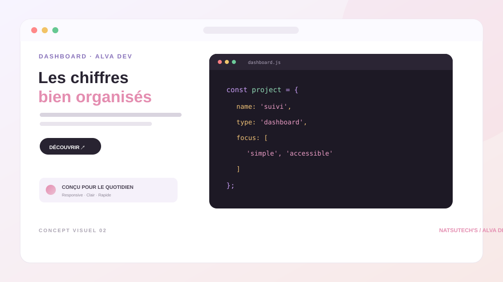
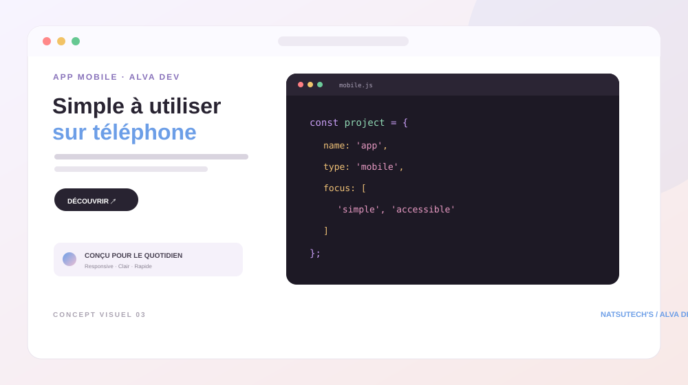
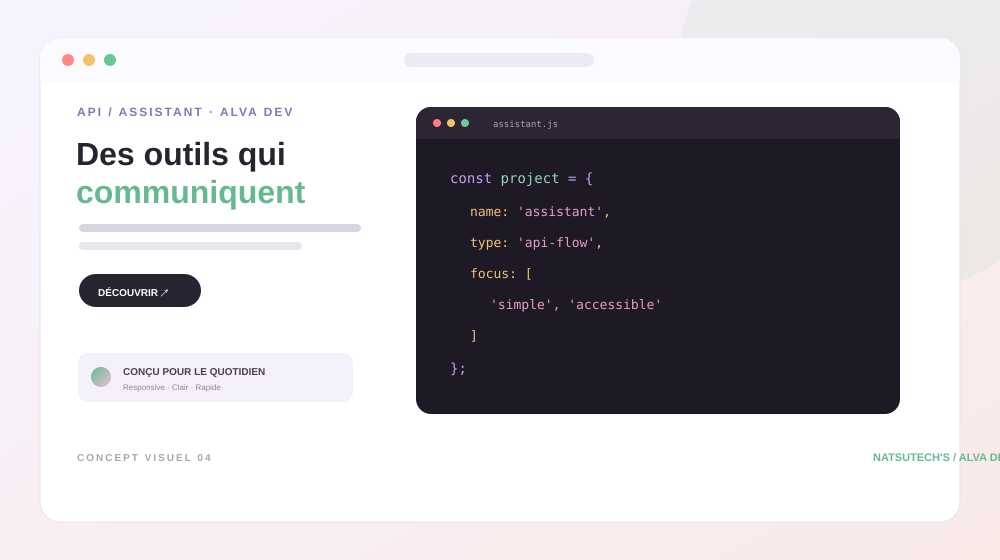

01↗
01↗Vitrine digitale
Une page claire pour présenter une activité, ses horaires et ses services.
Parcours des aperçus de sites, tableaux de bord et applications imaginés pour des besoins concrets.
Ces aperçus sont des concepts visuels créés pour illustrer des idées. Ils ne sont pas présentés comme des projets livrés à des clients.
01↗Une page claire pour présenter une activité, ses horaires et ses services.

02↗Un tableau de bord léger pour suivre des demandes, des tâches et les indicateurs essentiels.

03↗Une expérience mobile simple, avec une navigation lisible et des actions rapides.

04↗Une interface de démonstration pour relier un assistant à des services utiles.